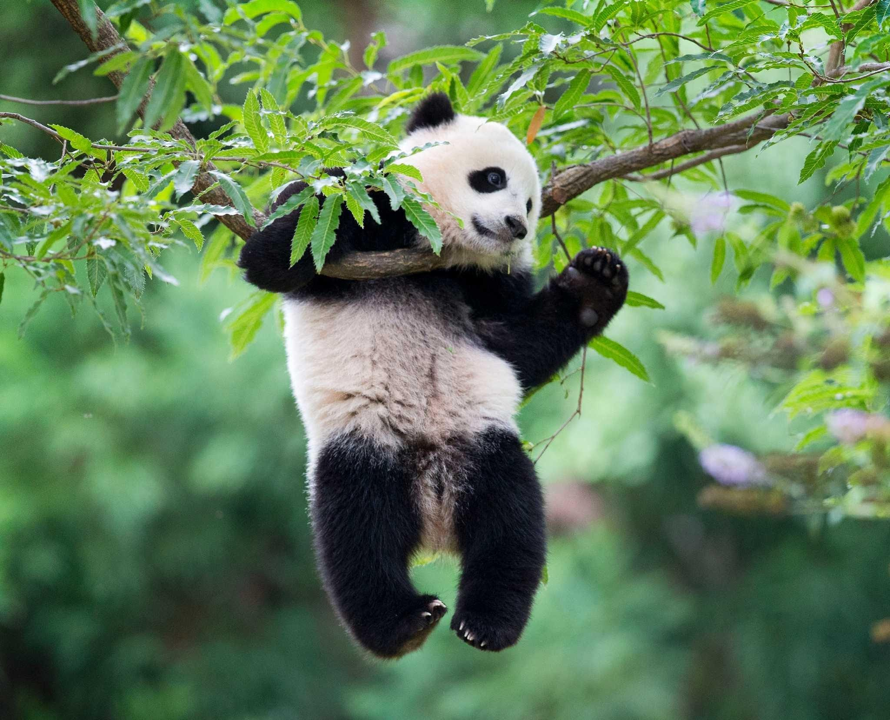

Загальна характеристика
Велика панда живе в листяних та хвойних лісах із густим бамбуковим підліском в гористих
місцевостях центрального Китаю,
таких як Сичуань і Тибет, на висоті від 1200 до 4000 м над рівнем моря. Зливи та густі тумани протягом
усього року
властиві
цим лісам, що часто повиті густими хмарами. Панди вимирають через те, що бамбукові ліси, де
вони живуть, масово
вирубують
і тваринам немає де жити.
Загальна площа їхнього ареалу близько 30 000 км², проте існує думка, що панди живуть на ділянці,
що
становить не більше
6 000 км². У рідних лісах кожна панда визначає свою територію, помічаючи крайні дерева за допомогою
виділень із пахучих
залоз. Іноді ці території частково накладаються на чужі межі, проте тварини звичайно уникають одне одного,
живучи
поодинці.
Китайська назва панди — «ведмідь-кіт» і означає те саме якщо прочитати її в зворотному напрямку. На заході
свою назву
«панда» звір отримав через віддалену схожість із малою пандою, також вона була знана під назвою «плямистий
ведмідь»
(Ailuropus melanoleucus). Ближче до кінця 20-го століття панда стала своєрідним символом Китаю, та її
зображення
використовується
на китайських золотих монетах. Вчені не мають точних даних, скільки панди живуть в
дикій природі, але,
без сумніву, менше ніж у
неволі. Китайські вчені повідомляли, що панди в неволі доживали до віку 35
років.
Цікаві факти
Китайська назва тварини xióngmāo означає «ведмідь-кішка». Західна назва великої панди (panda)
походить від непальської
назви малої
(червоної) панди, яку раніше хибно вважали спорідненою твариною.
Попри те, що панди належать до ряду хижих, їхній раціон переважно
вегетаріанський. Фактично, вони їдять
один тільки
бамбук. За день доросла панда з'їдає до 30 кг бамбука і пагонів. Технічно ж, як і багато
інших тварин,
панди всеїдні.
Коли велика панда не спить, тобто близько 16-ти годин на добу, вона майже постійно харчується. Для
збереження
маси тіла
їй необхідно з'їдати величезну кількість бамбуку, зокрема через те, що вегетаріанська їжа не дуже поживна, а
з іншого
боку, тому, що
травна система панди не така ефективна, як у інших травоїдних тварин. Якщо більшість
травоїдних засвоює
80% їжі, то панда лише 17%.
У людини з пандою на 68% збігаються гени.
Велика панда має незвичну будову лапи: окрім п’яти нормальних пальців у неї ще є «великий палець»,
який
насправді є
зміненою зап'ястною кісткою.
Шкура панди може коштувати в розмірі двох-трьох середніх річних доходів китайського селянина
на деяких
азійських ринках,
і в минулому браконьєрство було серйозною проблемою.
Проте в результаті освіти, інтенсивність
браконьєрства знизилася, і
це більше не вважається головною проблемою.
Передача великих панд
американським та японським зоопаркам була важливою складовою частиною дипломатії
КНР в 1970-х
роках, це був один з перших проявів
культурного обміну між Китаєм і Заходом.
В Китаї передбачена смертна кара за вбивство панди.
Зовнішній вигляд
Велика панда має чорно-біле забарвлення та будову тіла типову для ведмедів. Шерсть на вухах,
лапах та плечах чорного
кольору, також має чорні
«окуляри» навколо очей. Решта тіла покрито шерстю білого кольору. Хоча
науковцям невідома
причина такого забарвлення, дехто припускає, що таке
плямисте забарвлення забезпечує панді ефективне
маскування на
тінистому снігу та скелях, що характерні для середовища їхнього проживання.
Груба шерсть забезпечує
тепло панді в її
холодних лісах. Велика панда має великі кореневі зуби та сильні щелепні м'язи, що допомагають їй поїдати
твердий
бамбук.
Розмір панди порівняно із розміром американського чорного ведмедя: на чотирьох лапах її зріст становить
0,5-1 м у холці,
довжина 1,2-1,5 м.
Самці більші ніж самки, та можуть важити до 160 кг. Самки рідко досягають ваги понад
90 кг.
Велика панда має незвичну лапу: з «великим пальцем»
та п'ятьма нормальними пальцями; «великий палець»
насправді є
зміненою зап'ястною кісткою.
Поведінка
Великі панди — істоти нічні, що не сплять від сутінків до світанку. Вдень вони засинають і
відпочивають, проте не в
постійному лігві, а в затишному
місці, де-небудь поміж скель чи навіть у дуплі дерева.
Владно тримаючись на задніх лапах, великі панди звикли завжди рухатися, ступаючи на всі
чотири лапи
клишоногою ходою. У
разі погоні вони переходять на незграбний клус, проте невдовзі втомлюються і полишають швидкісний темп.
Панди зразкові
верхолази, через що часто видираються на нижні гілки дерев, шукаючи корм, чи просто відпочити чи сховатися
від
небезпеки.
Харчування
Попри те що велика панда належить до ряду хижих, живиться вона переважно бамбуковими пагонами. Доросла панда
протягом
дня поїдає до
9-14 кг бамбуку. Як більшість ведмедів, вона є всеїдною твариною та в її раціон входять,
окрім бамбуку,
яйця, комахи, дрібні ссавці, риба,
якщо на них вдається вполювати, а також вживають траву, квіти,
гриби, корінці та
кору. Як і ведмідь, панда вдається до нападів на бджолині
гнізда.
Попри те що бамбук становить близько 99 % раціону тварин, у панд відсутні гени, що кодують ферменти, здатні
розщеплювати
целюлозу,
наявну в бамбуку. Здатність засвоювати целюлозу пандами приписують мікроорганізмам, що живуть
у травній
системі. Таким чином, травна
система в панди не така ефективна, як в інших травоїдних тварин. Якщо
більшість
травоїдних засвоює 80 % їжі, то панда лише 17 %. Через
низькопоживну дієту пандам важливо зберігати
повним травний
тракт. Це причина, чому панди можуть випорожнюватися до 40 разів на добу.
Через низьку ефективність травлення, у період неспання, тобто близько 16 годин на добу, панда майже постійно
живиться.
Для збереження
нормальної маси тіла їй необхідно з'їдати величезну кількість бамбука. Специфічна дієта
визначає
поведінку та анатомію панди. Задля
збереження енергії панди стараються уникати соціальних контактів та
круто нахиленої
місцевості. Округле масивне тіло та спокійний спосіб
життя вказують на низький рівень метаболізму, що
дає змогу
економити енергію.[11] Кругла голова — наслідок наявності масивних м'язів
від верху голови до щелепи,
які дають змогу
пережовувати волокнистий бамбук.
Панди вживають усі 25 видів бамбуку, що існують у природі.
Лише кілька видів бамбуку ростуть у тих
висотах, які зараз
населяють панди. Листя бамбука містить найвищий рівень протеїну; стебла —
менший. Через синхронне
цвітіння, ріст та
відмирання усього бамбука одного певного виду велика панда мусить жити у досяжності принаймні
двох
різних видів рослини,
аби уникнути голодування.
Розмноження

Сезон парування великих панд триває від середини березня до травня, коли тварини знаходять собі пару. На
одну самицю
претендує 4-5 самців,
але щойно гамірне спарювання відбулося, тварини повертаються до колишнього
усамітненого способу
життя. Через 3-5 місяців самиця знаходить
у печері чи дуплі затишний теплий барліг.
Вагітність триває від 95 до 160
днів. Заславши лігво листям та гіллям, вона починає народжувати маля.
Нерідко на світ з'являються двоє
чи троє ведмежат,
але у більшості випадків самиця, за браком часу для необхідної опіки та уваги вигодовує одного
з них, а
решту полишає на
загибель.
Тижневе дитинча панди
Панди народжуються сліпі й майже голі, вагою не більше 150 г. Перші три тижні самиця
практично постійно сидить, не
випускаючи малюка з передніх лап та притискаючи його до сосків. Дитинча швидко росте. Наприкінці першого
місяця
в нього
відростає хутро з чорними плямами, а через два тижні розплющуються очі. Ходити воно починає лише через три
місяці, а до
цього мати постійно
його носить на собі.
У п'ятимісячному віці малюк переходить на бамбуковий корм, а ще через місяць його відлучають від грудей.
Коли йому
виповнюється
1-1,5 року, дитинча залишає матір і провадить самостійне життя. Великі панди досягають
статевої зрілості в
шестирічному віці, і самиця народжує
потомство кожні 2-3 роки
Зоопарки
Станом на 2009 рік у зоопарках різних країн живуть близько 200 панд.